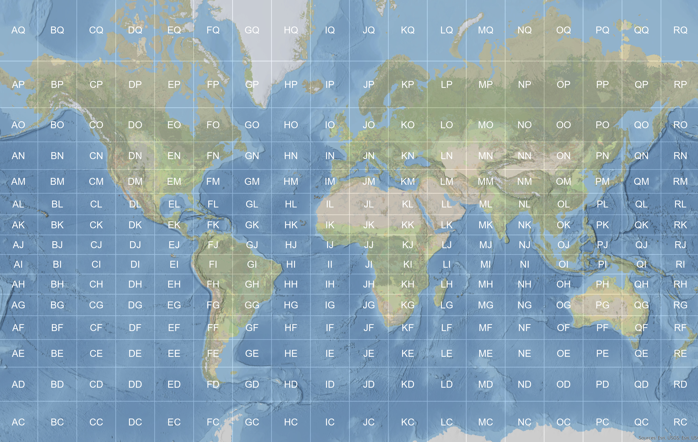

Right now only using commercial gear for operation, but I only got my license 22.04.2026, still waiting for the cable for my first handmade antenna. Planning to experiment with antennas. KJ6ER and K5OHY are very inspiring in that respect. I also have a blog so check it out.
If you are a real person email me at darteo at yandex.ru (no spaces and swap the at for @ of course). Would love to answer!
| Device | Model | Notes |
|---|---|---|
| Transceiver | QuanSheng UV-K5 V1 | The only rig I can afford with this economy |
| Antenna Tuner | Caban R150 | Not even mine lol |
| Antenna | Stock QuanSheng antenna | I told you a new one is coming! |
Couple of things here: (a) save the presets and (b) use this tool to do (a) and flash. And don't believe the stickers on the radio. Mine said V3, when it was V1 which I learned after bricking it. Not too hard to unbrick with K1_TOOL from here and a K1 version also from there. Doesn't really matter which one you install -- just has to be stock so you can upgrade further with no problems. Currently running this software and it works like a charm.
I really could not pick any 144 MHz signal (which is the CQ frequency in my region) with stock Quansheng antenna. Measuring its SWR with aforementioned Caban gave best SWR of 3.6 and 1.9 at 230 and 460 MHz respectively. So I decided to create a ground plane. Anyway building antennas seems to be the most interesting part of the hobby. I used an SMA connector and a 6 mm solid copper cable along with some bolts, nuts, washers, solder and a ready sma-male to sma-female coax connector . The parameters are as follows (with formulas so you can recalculate for the wavelength needed):